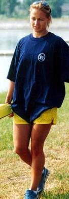

| Szabó Szilvia | |
|---|---|
|
11 éves kora óta sportol, jelenleg a Tiszaújvárosi Sport Egyesület tagja. 1997-ben ő is tagja volt az Europai Bajnokságon ezüstérmes négyesnek. Ugyanazzal az egységgel szintén második helyet szerzett a kanadai VB-n, majd a kővetkező évben a szegedi világbajnokságon. Az 1999-es zágrábi EB-n kajak kettesben két ezüsttel, kajak négyesben pedig egy arany- és egy ezüstéremmel lett gazdagabb. Tavaly Milánóban tagja volt a 200 és 500 méteren győztes négyesnek. Kedvenc időtöltése az olvasás, a filmek a zene és a tánc. |
 |